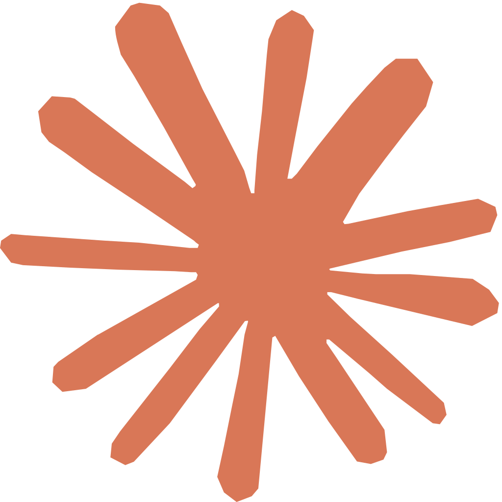

Overview
An LLM that thinks inside the model
Traditional simulation treats AI as something you run around a model: tune parameters up front, or analyze results afterward. SimGPT removes that boundary by packaging a Large Language Model as a native Simio Step, so the engine can call the model mid run to dispatch jobs, interpret state, and generate data on the fly. It is provider agnostic, so the same Step works across model families and versions without rewriting the model.
Decisions in the loop
The LLM is queried while the clock runs, so logic that once needed hard coded rules now reasons in context.
Native Simio Step
No external orchestration. Drop one file in and the SimGPT Step appears in the standard library.
Model agnostic
Swap providers and versions without touching the simulation, with a path to self hosted open models.
